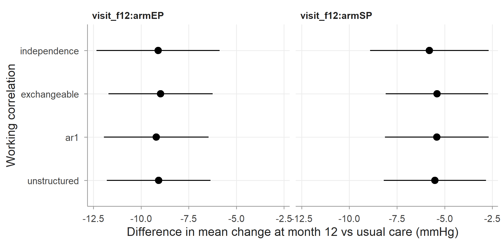
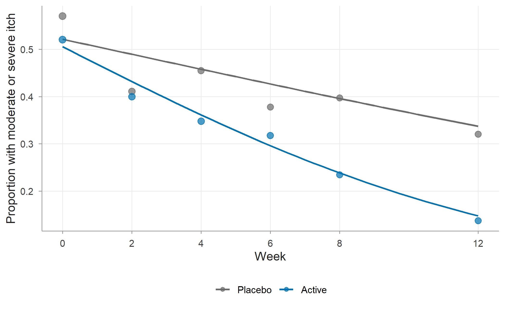
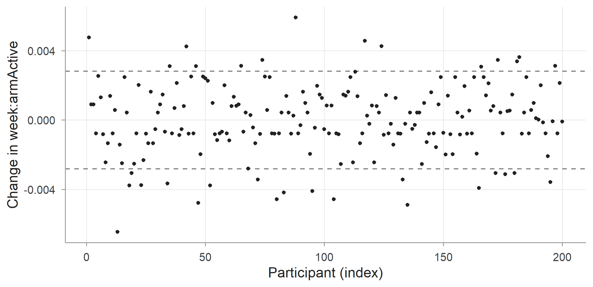
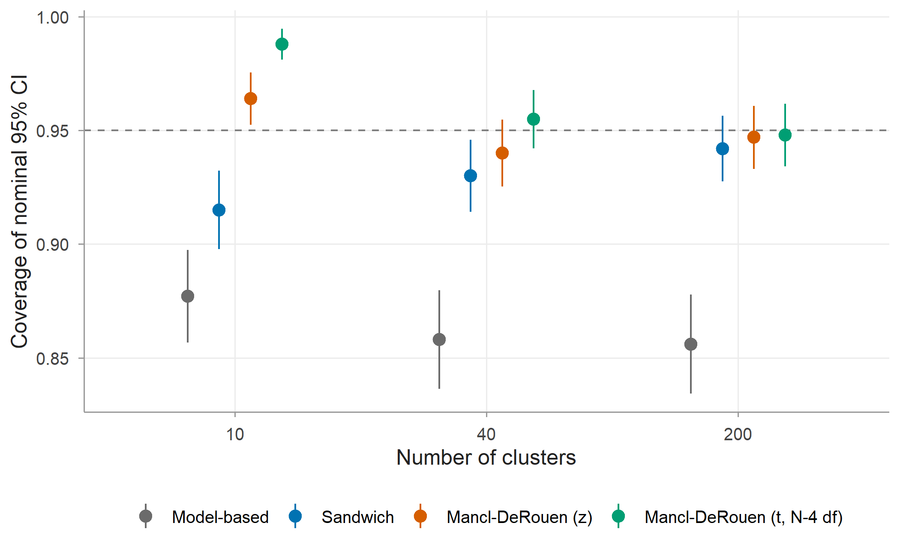

source(here::here("R", "setup.R"))
walk <- load_walk() |> arrange(id, month)
clear <- load_clear() |> arrange(id, week)
diary <- load_diary() |> arrange(id, period)
truth_clear <- readRDS(here("data", "clear_truth.rds"))
truth_diary <- readRDS(here("data", "diary_truth.rds"))
f2 <- function(x, d = 2) formatC(x, format = "f", digits = d)7 Generalized estimating equations
Mixed models answer questions about individuals: how does a typical participant’s outcome change, and how much do participants differ? Many studies, and most trials with binary or count outcomes, ask a different question: how does the average outcome in the population change, and how much does treatment change that average? Generalized estimating equations (GEE) answer the second question directly. They model the population-average (marginal) mean, treat the correlation between repeated measurements as a nuisance to be accounted for rather than modelled correctly, and protect the standard errors with the robust (sandwich) variance estimator. This module explains the method from the estimating equations up, applies it to continuous, binary and count outcomes, shows where it breaks down (few clusters, dropout that depends on the outcome), and shows how inverse-probability weighting repairs GEE when dropout is missing at random.
Learning outcomes
By the end of this module participants will be able to:
- 7.1 Explain the marginal model and its population-average interpretation.
- 7.2 Choose a working correlation structure and explain why the GEE estimates are consistent even when it is misspecified.
- 7.3 Distinguish model-based from robust (sandwich) standard errors and decide which to report.
- 7.4 Fit GEE with
geepackfor continuous, binary and count outcomes, and interpret the coefficients on the response scale. - 7.5 Explain why the number of independent clusters matters, and recognise small-sample problems with sandwich estimators.
- 7.6 State the missing-data assumption of standard GEE (MCAR, or MAR given covariates) and describe the idea of inverse-probability-weighted GEE.
Prerequisites
Module 0 (generalized linear models: link functions, logistic and Poisson regression), Module 1 (why repeated measurements are correlated), Module 4 (linear mixed models) and Module 5 (covariance structures such as compound symmetry, AR(1) and unstructured). Module 6 introduced the distinction between population-average and subject-specific predictions for linear models; this module develops it for non-linear links.
WarningSimulated data
All examples use simulated data from fictional studies. Results illustrate methods; they are not empirical findings.
7.1 Marginal models and the population-average question
A marginal model specifies how the mean of the outcome in the population depends on covariates, \(\mu_{ij} = E(Y_{ij} \mid \mathbf{x}_{ij})\), without conditioning on anything that is specific to an individual. Its coefficients therefore describe population-average (marginal) effects: how the proportion of people with moderate or severe itch differs between treated and untreated populations, or how the mean number of migraine days per month changes after starting treatment. A mixed model, by contrast, specifies the mean given a participant’s random effects, \(E(Y_{ij} \mid \mathbf{x}_{ij}, \mathbf{b}_i)\), and its coefficients are subject-specific (conditional) effects: how the odds of itch change for a given participant (Module 8).
For a continuous outcome with an identity link, the two coincide. Averaging \(\beta_0 + \beta_1 t_{ij} + b_{0i}\) over participants gives \(\beta_0 + \beta_1 t_{ij}\) because the random effects have mean zero, so the fixed effects of a linear mixed model are also population-average effects (Module 6). With a non-linear link this is no longer true. The average of many individual S-shaped logistic curves is a flatter S-shaped curve, so the population-average odds ratio is closer to 1 than the subject-specific odds ratio. For a log link with a random intercept, the slopes agree and only the intercept shifts. Module 8 works through this difference numerically. In this module we stay with the marginal model and its natural estimation method, GEE (Liang and Zeger 1986; Zeger et al. 1988).
In GEE language, the unit within which observations are correlated is a cluster. In longitudinal data a cluster is a participant: the six visits of one CLEAR participant form one cluster, and different participants are assumed independent. The sample size that matters for GEE inference is the number of clusters, \(N\), not the number of observations.
Which question is the right one depends on the purpose. A health-service planner who wants to know how many fewer patients will have moderate or severe itch if everyone receives the active treatment needs a population-average effect. A clinician advising one patient about how her own odds of itch will change may prefer a subject-specific effect. Regulatory analyses of binary trial endpoints usually target population-average quantities such as risk differences or marginal odds ratios.
7.2 Generalized estimating equations
This section presents GEE as a method, using the WALK trial (a continuous outcome) as the worked example. The following sections apply the same method to binary and count outcomes.
7.2.1 The research question and estimand
In WALK the primary estimand is the difference in mean change in systolic blood pressure (SBP) from baseline to month 12 between each walking programme and usual care. This is a population-average quantity by definition: it compares the mean change in the population if everyone received the programme with the mean change if everyone received usual care. GEE estimates it without a model for how individual participants vary around the mean.
7.2.2 Data structure and outcome types
GEE needs data in long format, one row per observation, with a cluster identifier. The rows of each cluster must be contiguous (all rows of one participant together) and, for time-dependent working correlations, sorted in time order with a variable that identifies the measurement occasion (waves in geeglm). The outcome can be of any type for which a generalized linear model exists: continuous (identity link), binary (logit link), counts (log link), and others. Covariates can be baseline (arm, age) or time-varying.
7.2.3 Intuition
Suppose for a moment that the 2,000 or so WALK observations were independent. We would fit an ordinary regression and solve the usual score equations: choose \(\boldsymbol\beta\) so that the residuals are, in a weighted sense, uncorrelated with the covariates. GEE keeps exactly that idea and adds two refinements. First, it allows the residuals of one participant to be weighted jointly, using a guess about their correlation (the working correlation). A good guess makes the estimate more precise; a bad guess costs precision but not validity. Second, it does not trust the guess when computing standard errors. Instead, it measures the actual variability of each participant’s contribution to the estimating equations directly from the data, which gives the robust (sandwich) standard error. The mean model has to be right; the correlation model only has to be reasonable.
7.2.4 The model
GEE has two parts. The first is the marginal mean model, a generalized linear model for the population mean:
\[ g(\mu_{ij}) = \mathbf{x}_{ij}^\top \boldsymbol\beta, \qquad \operatorname{Var}(Y_{ij}) = \phi\, v(\mu_{ij}), \]
where \(\mu_{ij} = E(Y_{ij} \mid \mathbf{x}_{ij})\) is the marginal mean for participant \(i\) at occasion \(j\), \(g(\cdot)\) is the link function (identity, logit, log), \(\mathbf{x}_{ij}\) is the covariate vector, \(\boldsymbol\beta\) the regression coefficients, \(v(\cdot)\) the variance function of the chosen family (\(v(\mu) = 1\) for the Gaussian, \(\mu(1-\mu)\) for the binomial, \(\mu\) for the Poisson) and \(\phi\) the dispersion (scale) parameter. For WALK, with UC and baseline as reference categories,
\[ \mu_{ij} = \beta_0 + \sum_{v \neq 0} \gamma_v\,[\text{visit}_{ij} = v] + \alpha_1 \text{SP}_i + \alpha_2 \text{EP}_i + \sum_{v \neq 0} \left\{(\gamma\alpha)_{v1}\,[\text{visit}_{ij} = v]\,\text{SP}_i + (\gamma\alpha)_{v2}\,[\text{visit}_{ij} = v]\,\text{EP}_i\right\}, \]
a separate mean for each arm at each scheduled visit, so that the interaction coefficients \((\gamma\alpha)_{12,1}\) and \((\gamma\alpha)_{12,2}\) are the differences in mean change at month 12 (Module 6).
The second part is the working covariance of the vector \(\mathbf{y}_i\) of participant \(i\)’s \(n_i\) observations:
\[ V_i = \phi\, A_i^{1/2}\, R_i(\boldsymbol\alpha)\, A_i^{1/2}, \]
where \(A_i = \operatorname{diag}\{v(\mu_{i1}), \dots, v(\mu_{in_i})\}\) holds the variance functions and \(R_i(\boldsymbol\alpha)\) is the working correlation matrix, an \(n_i \times n_i\) correlation matrix that depends on a few parameters \(\boldsymbol\alpha\). The word “working” signals that \(R_i(\boldsymbol\alpha)\) is not assumed to be the true correlation.
The estimate \(\hat{\boldsymbol\beta}\) solves the generalized estimating equations
\[ U(\boldsymbol\beta) = \sum_{i=1}^{N} D_i^\top V_i^{-1} \left(\mathbf{y}_i - \boldsymbol\mu_i\right) = \mathbf{0}, \qquad D_i = \frac{\partial \boldsymbol\mu_i}{\partial \boldsymbol\beta^\top}. \]
Read it from right to left. \(\mathbf{y}_i - \boldsymbol\mu_i\) is participant \(i\)’s vector of residuals. \(V_i^{-1}\) weights and decorrelates them according to the working covariance. \(D_i\) is the \(n_i \times p\) matrix of derivatives of the means with respect to the coefficients; for an identity link it is simply the design matrix \(X_i\), for other links it is \(X_i\) with each row multiplied by \(d\mu_{ij}/d\eta_{ij}\). The sum runs over the \(N\) independent clusters. With a single observation per participant, or with the independence working correlation \(R_i = I\), the equations reduce to the score equations of an ordinary generalized linear model. With an identity link they are the normal equations of generalized least squares.
The parameters \(\boldsymbol\alpha\) and \(\phi\) are estimated by the method of moments from Pearson residuals \(r_{ij} = (y_{ij} - \hat\mu_{ij}) / \sqrt{v(\hat\mu_{ij})}\), and the algorithm alternates between updating \(\boldsymbol\beta\) (given \(\boldsymbol\alpha\), \(\phi\)) and updating \(\boldsymbol\alpha\), \(\phi\) (given \(\boldsymbol\beta\)) until convergence. For example, the exchangeable correlation is estimated as the average product of standardised residuals over all pairs of observations within participants.
Why misspecifying the working correlation does not bias \(\hat{\boldsymbol\beta}\). At the true \(\boldsymbol\beta\), every term of \(U(\boldsymbol\beta)\) has expectation zero, because \(E(\mathbf{y}_i - \boldsymbol\mu_i) = \mathbf{0}\) whenever the mean model is correct, whatever matrix \(V_i^{-1}\) multiplies the residuals. Estimating functions with mean zero at the truth give consistent estimators: as the number of clusters grows, \(\hat{\boldsymbol\beta}\) converges to \(\boldsymbol\beta\). The working correlation affects only the weights given to different observations, and therefore the efficiency (precision) of \(\hat{\boldsymbol\beta}\). The closer \(R_i(\boldsymbol\alpha)\) is to the true correlation, the smaller the variance of \(\hat{\boldsymbol\beta}\) (Liang and Zeger 1986).
The sandwich variance. A first-order Taylor expansion of \(U(\hat{\boldsymbol\beta}) = \mathbf{0}\) around the true \(\boldsymbol\beta\) gives
\[ \widehat{\operatorname{Var}}(\hat{\boldsymbol\beta}) = B^{-1} M B^{-1}, \qquad B = \sum_{i=1}^N D_i^\top V_i^{-1} D_i, \qquad M = \sum_{i=1}^N D_i^\top V_i^{-1}\, \hat{\mathbf{e}}_i \hat{\mathbf{e}}_i^\top\, V_i^{-1} D_i, \]
with \(\hat{\mathbf{e}}_i = \mathbf{y}_i - \hat{\boldsymbol\mu}_i\). The two outer pieces (“bread”) come from the working model; the middle piece (“meat”) replaces the model’s claim about \(\operatorname{Var}(\mathbf{y}_i)\) by the empirical outer product \(\hat{\mathbf{e}}_i \hat{\mathbf{e}}_i^\top\). If the working covariance were exactly right, \(M\) would estimate \(B\) and the sandwich would collapse to the model-based (naive) variance \(B^{-1}\). When it is wrong, \(B^{-1}\) is wrong but \(B^{-1} M B^{-1}\) remains consistent. This is the robust (sandwich) standard error, and it is what geeglm() reports by default.
7.2.5 Assumptions and limitations
GEE rests on four assumptions. (1) The mean model is correctly specified: the right link, the right covariates and the right functional form of time. (2) Clusters are independent of each other. If participants are nested in clinics and outcomes are correlated within clinics, the clinic, not the participant, is the independent unit. (3) The number of clusters is large. Every justification above is asymptotic in \(N\); with few clusters the sandwich underestimates the variance (see the section on the number of clusters). (4) Missing data are missing completely at random (MCAR), or missingness depends only on covariates included in the model. Because GEE is not a likelihood method, the MAR argument that protects mixed models (Module 10) does not apply. A further, more technical condition applies to time-varying covariates: with a non-independence working correlation, GEE can be biased if the covariate at one occasion is related to outcomes at other occasions; the independence working correlation is safe in that situation.
GEE also has limitations as a tool. It gives no estimate of between-participant variation and no individual predictions. There is no likelihood, so likelihood-ratio tests and AIC are not available (Wald tests are used instead). The working correlation parameters are nuisance parameters and should not be interpreted substantively.
7.2.6 Fitting the model in R
geepack::geeglm() uses the familiar glm() syntax with three extra arguments: id (the cluster), corstr (the working correlation) and, for structures that depend on time order, waves (the occasion within cluster) (Halekoh et al. 2006).
gee_walk <- geeglm(sbp ~ visit_f * arm, id = factor(id), waves = visit,
data = walk, family = gaussian, corstr = "exchangeable")
summary(gee_walk)#>
#> Call:
#> geeglm(formula = sbp ~ visit_f * arm, family = gaussian, data = walk,
#> id = factor(id), waves = visit, corstr = "exchangeable")
#>
#> Coefficients:
#> Estimate Std.err Wald Pr(>|W|)
#> (Intercept) 146.183 1.142 16383.89 < 2e-16 ***
#> visit_f1 -1.668 0.642 6.76 0.00935 **
#> visit_f3 -2.648 0.826 10.28 0.00134 **
#> visit_f6 -1.644 0.996 2.72 0.09889 .
#> visit_f9 -1.222 1.012 1.46 0.22716
#> visit_f12 -1.261 1.041 1.47 0.22576
#> armSP 1.025 1.717 0.36 0.55042
#> armEP 1.350 1.655 0.67 0.41477
#> visit_f1:armSP -0.835 0.923 0.82 0.36566
#> visit_f3:armSP -2.559 1.094 5.47 0.01935 *
#> visit_f6:armSP -4.798 1.347 12.68 0.00037 ***
#> visit_f9:armSP -6.019 1.272 22.38 2.2e-06 ***
#> visit_f12:armSP -5.402 1.370 15.54 8.1e-05 ***
#> visit_f1:armEP -3.349 0.872 14.75 0.00012 ***
#> visit_f3:armEP -5.244 1.188 19.50 1.0e-05 ***
#> visit_f6:armEP -8.951 1.278 49.06 2.5e-12 ***
#> visit_f9:armEP -8.934 1.341 44.41 2.7e-11 ***
#> visit_f12:armEP -8.979 1.393 41.57 1.1e-10 ***
#> ---
#> Signif. codes: 0 '***' 0.001 '**' 0.01 '*' 0.05 '.' 0.1 ' ' 1
#>
#> Correlation structure = exchangeable
#> Estimated Scale Parameters:
#>
#> Estimate Std.err
#> (Intercept) 173 9.73
#> Link = identity
#>
#> Estimated Correlation Parameters:
#> Estimate Std.err
#> alpha 0.763 0.0181
#> Number of clusters: 360 Maximum cluster size: 6Two details matter. The data were sorted by id and month in the setup chunk, because geeglm treats each run of consecutive rows with the same id as one cluster. And the identifier is passed as factor(id). The WALK, CLEAR and DIARY identifiers are character strings such as "W001"; geeglm converts the cluster variable to numbers internally, and a character string becomes NA with the warning “NAs introduced by coercion”. The clusters are then wrong (with the CLEAR data, all 1,044 rows end up in a single cluster, which fit$geese$clusz reveals) and so are all the standard errors, which can be nonsensical or NaN. A factor or an integer identifier avoids this.
emm_walk <- emmeans(gee_walk, ~ visit_f | arm)
chg_walk <- contrast(emm_walk, list(change_m12 = c(-1, 0, 0, 0, 0, 1)))
diff_walk <- confint(contrast(chg_walk, "trt.vs.ctrl", by = NULL),
adjust = "none")
diff_walk#> contrast estimate SE df lower.CL upper.CL
#> change_m12 SP - change_m12 UC -5.40 1.37 1879 -8.09 -2.71
#> change_m12 EP - change_m12 UC -8.98 1.39 1879 -11.71 -6.25
#>
#> Confidence level used: 0.95emmeans works with geeglm fits and uses the sandwich covariance matrix by default (the output of emmeans names it vbeta). It reports degrees of freedom equal to the residual degrees of freedom of the fit; with around 2,000 observations these intervals are indistinguishable from the normal-based (Wald) intervals that GEE theory supports.
7.2.7 Interpreting the output
The output has three blocks.
| Output line | What it means | Value here |
|---|---|---|
(Intercept) |
Mean SBP in usual care at baseline | 146.2 mmHg |
visit_f12 |
Mean change from baseline to month 12 in usual care | -1.26 mmHg |
visit_f12:armSP |
Difference in mean change at month 12, SP vs UC | -5.40 mmHg (SE 1.37) |
visit_f12:armEP |
Difference in mean change at month 12, EP vs UC | -8.98 mmHg (SE 1.39) |
Std.err |
Robust (sandwich) standard error | |
Wald |
\((\text{estimate}/\text{SE})^2\), compared with \(\chi^2_1\) | |
Estimated Scale Parameters |
\(\hat\phi\), the residual variance for a Gaussian model | 173.3 mmHg² |
alpha |
Exchangeable working correlation | 0.76 |
Number of clusters |
Independent units, \(N\) | 360 |
The coefficients are population-average quantities. Participants in the enhanced programme reduced their mean SBP by 9.0 mmHg more than those in usual care between baseline and month 12 (95% CI 6.2 to 11.7 mmHg more); the standard programme reduced it by 5.4 mmHg more (95% CI 2.7 to 8.1). The estimated working correlation, 0.76, says that a participant’s readings are strongly correlated across visits, as expected for blood pressure. The scale 173.3 mmHg² is the total variance of a single SBP reading around the population mean (between-participant plus within-participant variance), so its square root, 13.2 mmHg, is the total SD.
The primary linear mixed model of the course gives -5.38 (SP) and -8.97 (EP) mmHg for the same estimands, very close to GEE’s -5.40 and -8.98. For a continuous outcome with an identity link the two methods target the same quantity, so the agreement is expected. They differ mainly in how they handle dropout: the mixed model is valid under MAR, GEE requires MCAR. Because the data are simulated we can compare with the true values, −4.6 (SP) and −8.1 (EP) mmHg. Both methods overestimate the benefits by similar amounts, which is consistent with sampling variation (the differences are within about one standard error).
7.2.8 Checking the model
GEE has no likelihood, so model checking concentrates on the mean model and on the plausibility of the working correlation.
- Mean model. Compare fitted marginal means with observed means by arm and visit. With a saturated mean model (
visit_f * arm) this is uninformative for WALK, but for the binary and count models below it is a real check of the linear-in-time assumption. Plot Pearson residuals against fitted values and against time to look for curvature. - Working correlation. Compute the empirical correlation of Pearson residuals between visits from an independence fit and compare it with the working structure. If they are close, the model-based and sandwich standard errors will also be close.
- Influential clusters. Refit the model leaving out one cluster at a time and look at the change in the key coefficient (a cluster-level “dfbeta”). With hundreds of clusters no single participant should move the estimate appreciably.
gee_walk_ind <- geeglm(sbp ~ visit_f * arm, id = factor(id), waves = visit,
data = walk, corstr = "independence")
walk_res <- walk |> mutate(r = residuals(gee_walk_ind, type = "pearson"))
round(visit_correlation(walk_res, id, month_sched, r), 2)#> 0 1 3 6 9 12
#> 0 1.00 0.88 0.79 0.74 0.76 0.72
#> 1 0.88 1.00 0.83 0.79 0.76 0.74
#> 3 0.79 0.83 1.00 0.78 0.75 0.74
#> 6 0.74 0.79 0.78 1.00 0.78 0.76
#> 9 0.76 0.76 0.75 0.78 1.00 0.83
#> 12 0.72 0.74 0.74 0.76 0.83 1.00The empirical correlations range from 0.72 to 0.88, are highest between adjacent visits and decline slowly with the gap between visits. An exchangeable working correlation of 0.76 is a reasonable summary of this pattern, although the decline with lag (a signature of the random slope and serial correlation in the WALK generating model) means it is not exactly right. That is the situation for which the sandwich estimator was designed.
7.2.9 Reporting
TipReporting example
Systolic blood pressure was analysed with generalized estimating equations (GEE) using an identity link, a separate mean for each arm at each scheduled visit, and an exchangeable working correlation (estimated correlation 0.76), with participants as clusters (N = 360). Standard errors were obtained from the robust (sandwich) estimator. Compared with usual care, the mean reduction in SBP from baseline to month 12 was 5.4 mmHg greater in the standard programme (95% CI 2.7 to 8.1) and 9.0 mmHg greater in the enhanced programme (95% CI 6.2 to 11.7). Because GEE is valid only if missing visits are missing completely at random, the primary analysis used a linear mixed model, which gave greater reductions of 5.4 (SP) and 9.0 (EP) mmHg.
7.2.10 Common mistakes
ImportantCommon mistakes
- Passing a character cluster identifier.
id = idwith identifiers such as"W001"produces “NAs introduced by coercion” and wrong clusters, and the standard errors become meaningless (sometimesNaN). Useid = factor(id)or an integer identifier. - Unsorted data.
geeglmtreats consecutive rows with the sameidas a cluster. Sort by participant and time (arrange(id, time)) before fitting. - Forgetting
waveswith incomplete data. For AR(1) and unstructured working correlations the occasion of each row matters. Withoutwaves, the second observed visit is treated as the second scheduled visit even when a visit was missed. - Reporting model-based standard errors as if they were the GEE standard errors. Report the sandwich SE unless you have a reason not to (few clusters, see below), and say which you used.
- Interpreting GEE coefficients as subject-specific effects. For non-identity links they are population-average effects.
- Using GEE as a “safe” choice when dropout depends on observed outcomes. Standard GEE requires MCAR; under MAR dropout use a likelihood method or weighted GEE.
7.3 Working correlation structures
The working correlation \(R_i(\boldsymbol\alpha)\) is the analyst’s guess at the within-participant correlation. geeglm offers four common choices (and user-defined ones).
corstr |
Structure | Parameters | Typical use |
|---|---|---|---|
"independence" |
\(R_i = I\) | none | Few clusters; time-varying covariates; observation-level weights |
"exchangeable" |
\(\operatorname{Corr}(Y_{ij}, Y_{ik}) = \alpha\) for all \(j \neq k\) | 1 | Short series, correlation roughly constant over time |
"ar1" |
\(\operatorname{Corr}(Y_{ij}, Y_{ik}) = \alpha^{\lvert j-k\rvert}\) | 1 | Equally spaced occasions, correlation decaying with lag |
"unstructured" |
A separate \(\alpha_{jk}\) for each pair of occasions | \(n(n-1)/2\) | Few occasions, many clusters |
These are the same patterns as the residual correlation structures of Module 5. The difference is in their role. In gls or a mixed model, the covariance structure is part of the likelihood, and getting it wrong biases the standard errors. In GEE, it is only a weighting scheme, and the sandwich estimator corrects the standard errors.
7.3.1 Consistency and efficiency in practice
We fit the WALK model with the four working correlations and compare the month-12 estimates and their standard errors.
geepack 1.3.13 (the version used for this course) terminates the R session when corstr = "unstructured" is combined with waves on data with incomplete clusters; we reproduced this with the package’s own dietox example after deleting some rows. For the identity link, a GEE with an unstructured working correlation is simple enough to write directly, and this is a useful exercise in its own right: generalized least squares given the working correlation, a moment estimate of the correlation from Pearson residuals, and the sandwich.
gee_unstructured <- function(formula, data, id, wave, maxit = 50, tol = 1e-8) {
mf <- model.frame(formula, data); X <- model.matrix(formula, mf)
y <- model.response(mf); idv <- data[[id]]; wv <- data[[wave]]
K <- max(wv); cl <- split(seq_along(y), idv); p <- ncol(X)
beta <- qr.solve(X, y) # start from OLS
for (it in seq_len(maxit)) {
e <- as.vector(y - X %*% beta)
phi <- sum(e^2) / (length(y) - p)
rs <- e / sqrt(mean(e^2)) # standardised residuals
S <- matrix(0, K, K); Nn <- matrix(0, K, K) # moment estimate of R
for (r in cl) {
S[wv[r], wv[r]] <- S[wv[r], wv[r]] + rs[r] %o% rs[r]
Nn[wv[r], wv[r]] <- Nn[wv[r], wv[r]] + 1
}
Rw <- S / Nn; diag(Rw) <- 1
B <- matrix(0, p, p); u <- rep(0, p) # GLS step given R
for (r in cl) {
Ri <- solve(Rw[wv[r], wv[r], drop = FALSE])
B <- B + t(X[r, , drop = FALSE]) %*% Ri %*% X[r, , drop = FALSE]
u <- u + t(X[r, , drop = FALSE]) %*% Ri %*% y[r]
}
new <- as.vector(solve(B, u))
done <- max(abs(new - beta)) < tol
beta <- new
if (done) break
}
e <- as.vector(y - X %*% beta); Binv <- solve(B); M <- matrix(0, p, p)
for (r in cl) { # sandwich "meat"
s <- t(X[r, , drop = FALSE]) %*% solve(Rw[wv[r], wv[r], drop = FALSE], e[r])
M <- M + s %*% t(s)
}
names(beta) <- colnames(X)
list(coefficients = beta, R = Rw, phi = phi,
vcov_robust = Binv %*% M %*% Binv, vcov_naive = phi * Binv)
}On the complete teaching file walk_complete.csv, where every participant has all six visits and geepack’s unstructured option works, the function reproduces geeglm:
walk_full <- load_walk("complete") |> arrange(id, visit)
chk_gp <- geeglm(sbp ~ month_sched * arm + age, id = factor(id),
data = walk_full, corstr = "unstructured")
chk_un <- gee_unstructured(sbp ~ month_sched * arm + age, data = walk_full,
id = "id", wave = "visit")
max(abs(coef(chk_gp) - chk_un$coefficients))#> [1] 3.91e-06The largest difference is at the level of the convergence tolerance. Now the comparison on the real (incomplete) WALK data:
cs <- c("independence", "exchangeable", "ar1")
fits <- lapply(cs, function(s) geeglm(sbp ~ visit_f * arm, id = factor(id),
waves = visit, data = walk, corstr = s))
names(fits) <- cs
un <- gee_unstructured(sbp ~ visit_f * arm, data = walk, id = "id",
wave = "visit")
k <- c("visit_f12:armSP", "visit_f12:armEP")
wc <- rbind(
do.call(rbind, lapply(cs, function(s) data.frame(
corstr = s, term = k, estimate = coef(fits[[s]])[k],
se_robust = sqrt(diag(vcov(fits[[s]])))[k],
se_model = sqrt(diag(fits[[s]]$geese$vbeta.naiv))[match(k, names(coef(fits[[s]])))]))),
data.frame(corstr = "unstructured", term = k, estimate = un$coefficients[k],
se_robust = sqrt(diag(un$vcov_robust))[match(k, names(un$coefficients))],
se_model = sqrt(diag(un$vcov_naive))[match(k, names(un$coefficients))]))
rownames(wc) <- NULL
wc |> mutate(across(where(is.numeric), \(x) round(x, 2)))#> corstr term estimate se_robust se_model
#> 1 independence visit_f12:armSP -5.80 1.59 2.53
#> 2 independence visit_f12:armEP -9.11 1.65 2.56
#> 3 exchangeable visit_f12:armSP -5.40 1.37 1.26
#> 4 exchangeable visit_f12:armEP -8.98 1.39 1.28
#> 5 ar1 visit_f12:armSP -5.41 1.39 1.63
#> 6 ar1 visit_f12:armEP -9.20 1.40 1.65
#> 7 unstructured visit_f12:armSP -5.51 1.37 1.45
#> 8 unstructured visit_f12:armEP -9.07 1.39 1.47ggplot(wc, aes(estimate, factor(corstr, levels = rev(c(cs, "unstructured"))))) +
geom_pointrange(aes(xmin = estimate - 1.96 * se_robust,
xmax = estimate + 1.96 * se_robust)) +
facet_wrap(~ term) +
labs(x = "Difference in mean change at month 12 vs usual care (mmHg)",
y = "Working correlation")
Three lessons can be read from the table. First, the three non-independence structures give nearly identical estimates (for EP between -9.20 and -8.98 mmHg) and nearly identical robust standard errors (about 1.39). Second, the independence working correlation differs more (EP -9.11, SE 1.65). Its larger robust SE is the efficiency cost of ignoring a correlation of about 0.8: under independence each month-12 difference is essentially a comparison of month-12 means, and the strongly correlated earlier readings of the same participants are not used to sharpen it. Its different point estimate also has a second cause. Participants dropped out depending on their blood pressure, and under independence the month-12 mean in each arm is estimated only from the participants still present at month 12. A correlated working structure lets the earlier readings of the dropouts pull the estimate towards what their later readings would probably have been, which partly mimics a likelihood analysis (though without its guarantee under MAR). Under MCAR the structures would differ only by sampling noise; under MAR dropout they can differ systematically, which is a warning sign rather than a choice to exploit. Third, the model-based standard errors depend strongly on the structure: under independence they are far too large (2.56 against a robust 1.65), because a model that believes all readings are independent cannot see that the within-participant change is measured precisely. Under exchangeable they are somewhat too small (1.28 against 1.39), because exchangeable ignores the decline in correlation with time. The sandwich SEs barely move.
7.3.2 Choosing the working correlation in practice
The choice rests on design and plausibility more than on a formal test:
- Use the structure suggested by the design: exchangeable for a few closely spaced occasions; AR(1) for many equally spaced occasions where correlation decays; unstructured for a small, fixed set of occasions with many clusters; independence when there are time-varying covariates that may be affected by earlier outcomes, or when observation-level weights are used.
- Look at the empirical correlation of Pearson residuals from an independence fit, as above.
- Compare model-based and sandwich standard errors. Close agreement suggests a working correlation close to the truth.
- Prefer parsimony when clusters are few. Each extra correlation parameter is estimated from the same \(N\) clusters, and an unstructured matrix with 15 parameters estimated from 30 clusters can make \(\hat{\boldsymbol\beta}\) less precise, not more.
- Prespecify it. Choosing among structures after looking at which gives the smallest p-value is a form of multiple testing.
A quasi-likelihood information criterion, QIC, is sometimes used to compare working correlations. It is available in recent versions of geepack as QIC(), although some descriptions of the package say otherwise. QIC is the quasi-likelihood under the independence model plus a penalty \(2\,\mathrm{trace}(\hat\Omega_I \hat V_R)\), where \(\hat\Omega_I\) is the inverse model-based variance under independence and \(\hat V_R\) the sandwich variance under the structure being assessed. The penalty term on its own is called CIC.
t(sapply(fits, QIC))[, c("QIC", "CIC")]#> QIC CIC
#> independence 327580 18.0
#> exchangeable 328768 17.3
#> ar1 328858 17.2Here QIC is smallest for independence (327,580), the structure we know to be furthest from the truth, while CIC is smallest for AR(1) (17.23) and exchangeable (17.26) and largest for independence (17.97). The quasi-likelihood part of QIC is evaluated as if observations were independent, so it rewards whatever \(\hat{\boldsymbol\beta}\) fits the marginal means best and is only weakly related to the correlation; differences in the penalty are small by comparison. QIC is more useful for comparing mean models with the same working correlation than for choosing the correlation, and even then it should guide, not decide. The CIC on its own is a better (though still informal) guide to the working correlation.
7.4 Model-based versus robust standard errors
geeglm reports the sandwich standard error. The model-based variance \(\hat\phi B^{-1}\), which is correct only if the working covariance is correct, is stored in the fit as fit$geese$vbeta.naiv. The table below shows both, for the binary CLEAR model fitted in the next section, together with a bias-corrected sandwich discussed later.
# Sandwich variance computed by hand. With correction = "MD" each cluster's
# residuals are inflated by (I - H_i)^{-1} (Mancl and DeRouen 2001).
sandwich_gee <- function(fit, correction = c("none", "MD")) {
correction <- match.arg(correction)
X <- model.matrix(fit); y <- fit$y; mu <- fitted(fit)
fam <- family(fit); eta <- fit$linear.predictors
w <- fit$prior.weights; if (is.null(w)) w <- rep(1, length(y))
alpha <- fit$geese$alpha
cl <- split(seq_along(y), fit$id)
p <- ncol(X); B <- matrix(0, p, p); parts <- vector("list", length(cl))
for (k in seq_along(cl)) {
r <- cl[[k]]; n <- length(r); R <- diag(n)
if (fit$corstr == "exchangeable" && n > 1) { R[] <- alpha; diag(R) <- 1 }
if (fit$corstr == "ar1" && n > 1) R <- alpha^abs(outer(1:n, 1:n, "-"))
A <- diag(sqrt(fam$variance(mu[r]) / w[r]), n)
Vinv <- solve(A %*% R %*% A) # phi cancels in the sandwich
D <- fam$mu.eta(eta[r]) * X[r, , drop = FALSE]
B <- B + t(D) %*% Vinv %*% D
parts[[k]] <- list(D = D, Vinv = Vinv, e = y[r] - mu[r])
}
Binv <- solve(B); M <- matrix(0, p, p)
for (pk in parts) {
e <- pk$e
if (correction == "MD") {
H <- pk$D %*% Binv %*% t(pk$D) %*% pk$Vinv
e <- solve(diag(nrow(H)) - H, e)
}
u <- t(pk$D) %*% pk$Vinv %*% e
M <- M + u %*% t(u)
}
V <- Binv %*% M %*% Binv
dimnames(V) <- list(colnames(X), colnames(X))
V
}gee_clear <- geeglm(itch ~ week * arm, id = factor(id), waves = visit,
data = clear, family = binomial, corstr = "exchangeable")
max(abs(sandwich_gee(gee_clear) - vcov(gee_clear))) # hand-coded = geeglm#> [1] 7.98e-17se_tab <- data.frame(estimate = coef(gee_clear),
se_model = sqrt(diag(gee_clear$geese$vbeta.naiv)),
se_robust = sqrt(diag(vcov(gee_clear))),
se_md = sqrt(diag(sandwich_gee(gee_clear, "MD"))))
round(se_tab, 4)#> estimate se_model se_robust se_md
#> (Intercept) 0.0849 0.1635 0.1534 0.1550
#> week -0.0634 0.0190 0.0189 0.0191
#> armActive -0.0634 0.2308 0.2250 0.2273
#> week:armActive -0.0844 0.0292 0.0282 0.0285The hand-coded sandwich agrees with geeglm to rounding error, which confirms that we understand what the package computes. For CLEAR the model-based and robust standard errors are close (for example 0.0292 and 0.0282 for the interaction). The exchangeable working correlation is a good approximation here because the CLEAR data were generated with a random intercept only, which implies a correlation on the latent scale that is the same for every pair of visits.
Which to report? The default is the sandwich SE, because it is valid whatever the true correlation, provided there are enough clusters. The model-based SE is more precise (it does not have to estimate the variance empirically) and is valid if the working covariance is right, so it can be preferable when there are very few clusters and the working correlation is credible, for example from a well-understood design. A large discrepancy between the two is a diagnostic: it says that the working correlation is far from the truth, and a better structure would probably give more efficient estimates.
7.5 GEE for a binary outcome: CLEAR
7.5.1 The research question and estimand
How does the proportion of participants with moderate or severe itch change over 12 weeks, and does the decline differ between active treatment and placebo? A natural estimand is the population-average (marginal) odds ratio for the difference in weekly trends, together with the difference in the proportion with itch at week 12 (a risk difference) between arms.
7.5.2 Data structure and outcome types
CLEAR has 1044 observations on 200 participants, scheduled at weeks 0, 2, 4, 6, 8 and 12. The outcome itch is 1 if severity is moderate or severe. Dropout depends on the last observed severity (MAR), which matters for GEE and is taken up in the final section.
7.5.3 Intuition
A logistic marginal model describes the curve of the population proportion over time in each arm. GEE estimates that curve as if fitting an ordinary logistic regression to all observations, but with participants’ repeated observations weighted according to the working correlation, and with standard errors that account for the fact that a participant who had itch at week 2 is likely to have it at week 4.
7.5.4 The model
\[ \operatorname{logit} \mu_{ij} = \beta_0 + \beta_1 t_{ij} + \beta_2 \text{Active}_i + \beta_3 t_{ij}\text{Active}_i, \qquad v(\mu_{ij}) = \mu_{ij}(1-\mu_{ij}), \]
where \(\mu_{ij} = P(Y_{ij} = 1 \mid t_{ij}, \text{Active}_i)\) is the proportion of the population with itch at week \(t_{ij}\) in the given arm, \(\beta_0\) is the log-odds at week 0 on placebo, \(\beta_1\) the change in population log-odds per week on placebo, \(\beta_2\) the baseline difference between arms (expected to be near zero after randomisation) and \(\beta_3\) the additional change per week on active treatment. The binomial variance function fixes \(\phi = 1\) in principle; geeglm estimates it anyway, and a value close to 1 is reassuring. The working correlation is exchangeable.
7.5.5 Assumptions and limitations
The mean model assumes that the population log-odds is linear in week in each arm. Because the conditional model that generated CLEAR is linear on the logit scale, the marginal log-odds is not exactly linear (averaging S-shaped curves changes their shape), but the departure is small over this range. Correlation between binary outcomes is constrained by their means, so the working correlation for binary data is a rough device; this matters little because the sandwich protects the standard errors. The MCAR requirement is violated in CLEAR; we return to this.
7.5.6 Fitting the model in R
The model gee_clear was fitted above. Odds ratios with Wald intervals come from the course helper fixef_table(), and predicted proportions and risk differences from emmeans:
summary(gee_clear)#>
#> Call:
#> geeglm(formula = itch ~ week * arm, family = binomial, data = clear,
#> id = factor(id), waves = visit, corstr = "exchangeable")
#>
#> Coefficients:
#> Estimate Std.err Wald Pr(>|W|)
#> (Intercept) 0.0849 0.1534 0.31 0.5801
#> week -0.0634 0.0189 11.24 0.0008 ***
#> armActive -0.0634 0.2250 0.08 0.7781
#> week:armActive -0.0844 0.0282 8.95 0.0028 **
#> ---
#> Signif. codes: 0 '***' 0.001 '**' 0.01 '*' 0.05 '.' 0.1 ' ' 1
#>
#> Correlation structure = exchangeable
#> Estimated Scale Parameters:
#>
#> Estimate Std.err
#> (Intercept) 0.99 0.041
#> Link = identity
#>
#> Estimated Correlation Parameters:
#> Estimate Std.err
#> alpha 0.333 0.0377
#> Number of clusters: 200 Maximum cluster size: 6fixef_table(gee_clear, exponentiate = TRUE)#> term estimate se lower upper p
#> 1 (Intercept) 1.089 0.1534 0.806 1.470 0.580088
#> 2 week 0.939 0.0189 0.904 0.974 0.000799
#> 3 armActive 0.939 0.2250 0.604 1.459 0.778093
#> 4 week:armActive 0.919 0.0282 0.870 0.971 0.002771emm_clear <- emmeans(gee_clear, ~ arm | week, at = list(week = c(0, 12)),
type = "response")
emm_clear#> week = 0:
#> arm prob SE df lower.CL upper.CL
#> Placebo 0.521 0.0383 1040 0.446 0.595
#> Active 0.505 0.0411 1040 0.425 0.585
#>
#> week = 12:
#> arm prob SE df lower.CL upper.CL
#> Placebo 0.337 0.0461 1040 0.253 0.433
#> Active 0.148 0.0297 1040 0.098 0.216
#>
#> Covariance estimate used: vbeta
#> Confidence level used: 0.95
#> Intervals are back-transformed from the logit scalerd12 <- confint(contrast(regrid(emmeans(gee_clear, ~ arm | week,
at = list(week = 12))), "revpairwise"))
rd12#> week = 12:
#> contrast estimate SE df lower.CL upper.CL
#> Active - Placebo -0.189 0.0548 1040 -0.297 -0.0818
#>
#> Confidence level used: 0.957.5.7 Interpreting the output
On placebo, the population odds of moderate or severe itch fall by a factor of 0.939 per week (log-odds -0.063). On active treatment the weekly factor is multiplied by a further 0.919 (95% CI 0.870 to 0.971): this ratio of odds ratios, exp(week:armActive), is the treatment effect on the trend. Over 12 weeks it compounds to an odds ratio of 0.36 (95% CI 0.19 to 0.71), meaning that at week 12 the population odds of itch on active treatment are about 64% lower than on placebo, given equal odds at baseline. The baseline difference armActive is small (-0.06), as randomisation implies.
Odds ratios are hard to communicate, so the predicted proportions are more useful. At week 0 the estimated proportions with itch are 0.52 (placebo) and 0.51 (active). At week 12 they are 0.34 and 0.15, a risk difference of -0.189 (95% CI -0.297 to -0.082): about 19 fewer people per 100 with moderate or severe itch at week 12 if the whole population were treated. The working correlation is 0.33 and the scale parameter 0.99, close to 1 as the binomial model implies.
7.5.8 Checking the model
pred_clear <- expand.grid(week = seq(0, 12, 0.25),
arm = factor(c("Placebo", "Active"),
levels = c("Placebo", "Active")))
pred_clear$p <- predict(gee_clear, newdata = pred_clear, type = "response")
obs_clear <- clear |> group_by(arm, week) |> summarise(p = mean(itch), n = n())
ggplot(pred_clear, aes(week, p, colour = arm)) +
geom_line(linewidth = 0.8) +
geom_point(data = obs_clear, aes(size = n), alpha = 0.7) +
scale_colour_arm(name = NULL) +
scale_size_area(max_size = 3, guide = "none") +
scale_x_continuous(breaks = c(0, 2, 4, 6, 8, 12)) +
labs(x = "Week", y = "Proportion with moderate or severe itch")
The fitted curves follow the observed proportions reasonably well; the placebo proportion drops between weeks 0 and 2 more than the linear logit allows, which may be sampling variation or a sign that a categorical time model would fit better. Remember that observed proportions at later weeks come from the participants still in the study, so under outcome-dependent dropout they are not unbiased estimates of the population proportions.
To look for influential participants, refit the model without each participant in turn (a “leave-one-cluster-out” analysis):
ids <- unique(clear$id)
dfb <- sapply(ids, function(i)
coef(geeglm(itch ~ week * arm, id = factor(id), waves = visit,
data = filter(clear, id != i), family = binomial,
corstr = "exchangeable"))["week:armActive"] -
coef(gee_clear)["week:armActive"])
ggplot(data.frame(id = ids, dfb = dfb), aes(seq_along(id), dfb)) +
geom_hline(yintercept = c(-0.1, 0.1) * sc["week:armActive"],
linetype = 2, colour = "grey50") +
geom_point(size = 1) +
labs(x = "Participant (index)", y = "Change in week:armActive")
No single participant moves the interaction by more than 0.0065, which is 0.23 robust standard errors. (Summing the squares of these changes gives the jackknife variance, closely related to the bias-corrected sandwich below.)
7.5.9 Reporting
TipReporting example
The proportion of participants with moderate or severe itch was analysed with a logistic GEE model including week (as a linear term), arm and their interaction, an exchangeable working correlation (estimated 0.33) and robust standard errors, with 200 participants as clusters. The population odds of itch declined by a factor of 0.939 per week on placebo; the odds ratio for the additional weekly decline on active treatment was 0.919 (95% CI 0.870 to 0.971). At week 12 the estimated proportions with itch were 0.34 on placebo and 0.15 on active treatment, a risk difference of -0.19 (95% CI -0.30 to -0.08). Because dropout was related to severity, an inverse-probability-weighted analysis was performed as a sensitivity analysis.
7.5.10 Common mistakes
ImportantCommon mistakes
- Calling the GEE odds ratio a subject-specific effect. It describes populations; the odds ratio for an individual is larger in magnitude (Module 8).
- Reporting only odds ratios. Give predicted proportions and risk differences as well; they are what readers understand.
- Overinterpreting the working correlation for binary data. It is a nuisance parameter on an awkward scale; do not report it as “the” correlation of itch over time.
- Using a character participant identifier, which silently breaks the clusters (see above).
7.6 GEE for a count outcome with exposure: DIARY
7.6.1 The research question and estimand
Does the preventive treatment reduce the population rate of migraine days, and by how much? The estimand is the ratio of post-baseline to baseline rates in the active arm divided by the same ratio in the placebo arm (a ratio of rate ratios), together with the expected number of migraine days per 28 days in each arm after baseline.
7.6.2 Data structure and outcome types
DIARY has 1026 diary periods from 160 participants: a 28-day baseline period and up to six 28-day treatment periods. The count migraine_days refers to days days with a completed diary (between 14 and 28). Because the period of observation varies, the natural quantity is a rate, migraine days per diary day, and log(days) enters the model as an offset: a term with coefficient fixed at 1.
7.6.3 Intuition
A log-linear marginal model says that the population mean count in a period is the number of diary days multiplied by a rate that depends on arm and period. Counts of migraine days vary more than a Poisson distribution allows, both because people differ and because migraines cluster; in GEE this extra variation is absorbed by the scale parameter \(\phi\) and by the sandwich, so a Poisson variance function is enough to estimate the mean model.
7.6.4 The model
\[ \log \mu_{ij} = \log(\text{days}_{ij}) + \beta_0 + \beta_1 \text{post}_{ij} + \beta_2 \text{Active}_i + \beta_3 \text{post}_{ij}\text{Active}_i, \qquad \operatorname{Var}(Y_{ij}) = \phi\,\mu_{ij}, \]
where \(\mu_{ij}\) is the population mean number of migraine days for participant \(i\) in period \(j\), \(\text{post}_{ij}\) indicates a treatment period, \(\exp(\beta_0)\) is the baseline rate per diary day on placebo, \(\exp(\beta_1)\) the placebo rate ratio after versus before baseline, \(\exp(\beta_2)\) the baseline rate ratio between arms (near 1 after randomisation), and \(\exp(\beta_3)\) the treatment effect as a ratio of rate ratios. \(\phi > 1\) allows overdispersion.
7.6.5 Assumptions and limitations
The rate is assumed constant across the six treatment periods within each arm (a single post effect); a model with period_f * arm relaxes this. Dropout in DIARY was generated completely at random, so the MCAR assumption of GEE holds here, which is rarely knowable in practice. For a log link with a random intercept, marginal and conditional rate ratios coincide, so the GEE rate ratio estimates the same quantity as the corresponding mixed model coefficient (Module 8), although the intercepts differ.
7.6.6 Fitting the model in R
gee_diary <- geeglm(migraine_days ~ post * arm + offset(log(days)),
id = factor(id), waves = period + 1, data = diary,
family = poisson, corstr = "exchangeable")
summary(gee_diary)#>
#> Call:
#> geeglm(formula = migraine_days ~ post * arm + offset(log(days)),
#> family = poisson, data = diary, id = factor(id), waves = period +
#> 1, corstr = "exchangeable")
#>
#> Coefficients:
#> Estimate Std.err Wald Pr(>|W|)
#> (Intercept) -1.6201 0.0882 337.28 <2e-16 ***
#> post -0.1634 0.0944 2.99 0.084 .
#> armActive -0.0466 0.1455 0.10 0.749
#> post:armActive -0.2392 0.1281 3.48 0.062 .
#> ---
#> Signif. codes: 0 '***' 0.001 '**' 0.01 '*' 0.05 '.' 0.1 ' ' 1
#>
#> Correlation structure = exchangeable
#> Estimated Scale Parameters:
#>
#> Estimate Std.err
#> (Intercept) 3.51 0.387
#> Link = identity
#>
#> Estimated Correlation Parameters:
#> Estimate Std.err
#> alpha 0.369 0.0386
#> Number of clusters: 160 Maximum cluster size: 7fixef_table(gee_diary, exponentiate = TRUE)#> term estimate se lower upper p
#> 1 (Intercept) 0.198 0.0882 0.166 0.235 0.0000
#> 2 post 0.849 0.0944 0.706 1.022 0.0835
#> 3 armActive 0.954 0.1455 0.718 1.269 0.7486
#> 4 post:armActive 0.787 0.1281 0.612 1.012 0.0619emm_diary <- emmeans(gee_diary, ~ arm | post, offset = log(28), type = "response")
emm_diary#> post = 0:
#> arm rate SE df lower.CL upper.CL
#> Placebo 5.54 0.489 1022 4.66 6.59
#> Active 5.29 0.612 1022 4.21 6.64
#>
#> post = 1:
#> arm rate SE df lower.CL upper.CL
#> Placebo 4.71 0.323 1022 4.11 5.38
#> Active 3.54 0.281 1022 3.02 4.13
#>
#> Covariance estimate used: vbeta
#> Confidence level used: 0.95
#> Intervals are back-transformed from the log scaleThe offset = log(28) argument in emmeans asks for the expected count in a full 28-day period, which is easier to interpret than a rate per day.
7.6.7 Interpreting the output
The baseline rate on placebo is 0.198 migraine days per diary day, or 5.5 days per 28 days. After baseline the placebo rate changes by a factor of 0.85, a placebo response or regression to the mean. The treatment effect, the ratio of rate ratios, is 0.79 (95% CI 0.61 to 1.01, p = 0.062): relative to baseline, the post-baseline migraine rate is about 21% lower on active treatment than on placebo, but the interval includes no effect. In terms of expected migraine days per 28 days after baseline, the model estimates 4.7 on placebo and 3.5 on active treatment. The scale parameter, 3.51, shows that the counts vary about 3.5 times as much as a Poisson distribution would imply; ignoring this would make the model-based standard errors far too small, but the sandwich handles it automatically. Because the data are simulated we know the true rate ratio is exp(−0.40) = 0.67, which lies inside the interval.
7.6.8 Checking the model
Two checks are specific to counts. First, compare observed and fitted mean rates by arm and period to judge whether a single post-baseline rate is adequate. Second, the scale parameter is an estimate of overdispersion; a value far above 1 does not invalidate GEE, but it means that a Poisson likelihood analysis would be wrong and that a negative binomial mixed model (Module 8) may be more efficient.
diary |>
mutate(fitted = fitted(gee_diary)) |>
group_by(arm, period) |>
summarise(observed_rate = sum(migraine_days) / sum(days),
fitted_rate = sum(fitted) / sum(days)) |>
mutate(across(ends_with("rate"), \(x) round(28 * x, 2))) |>
pivot_wider(names_from = arm, values_from = c(observed_rate, fitted_rate))#> # A tibble: 7 × 5
#> period observed_rate_Placebo observed_rate_Active fitted_rate_Placebo
#> <dbl> <dbl> <dbl> <dbl>
#> 1 0 5.52 5.35 5.54
#> 2 1 4.36 3.56 4.71
#> 3 2 5.43 3.2 4.71
#> 4 3 4.77 3.85 4.71
#> 5 4 4.34 3.5 4.71
#> 6 5 4.43 3.99 4.71
#> 7 6 5.38 3.5 4.71
#> # ℹ 1 more variable: fitted_rate_Active <dbl>The observed rates per 28 days fluctuate around the fitted constant post-baseline rate in each arm without a clear trend, so the simpler model is adequate.
7.6.9 Reporting
TipReporting example
Migraine days were analysed with a Poisson GEE model with log link, log(diary days) as an offset, period (baseline vs treatment) by arm, an exchangeable working correlation and robust standard errors (160 clusters). Counts were overdispersed (scale 3.5). The ratio of the post-baseline to baseline migraine rate was 0.79 times as large on active treatment as on placebo (95% CI 0.61 to 1.01). The expected number of migraine days per 28 days during treatment was 4.7 on placebo and 3.5 on active treatment.
7.6.10 Common mistakes
ImportantCommon mistakes
- Omitting the offset, or entering
daysas a covariate instead ofoffset(log(days)). Without the offset, periods with fewer diary days look like periods with fewer migraines. - Switching to a negative binomial family “because of overdispersion” in GEE. Not necessary: the Poisson variance with an estimated scale and the sandwich give valid inference for the mean model.
- Reading the
armActivecoefficient as the treatment effect. With a baseline period in the model, it is the baseline difference; the treatment effect is the interaction.
7.7 How many clusters? Small-sample behaviour of the sandwich
7.7.1 The research question and estimand
How trustworthy are sandwich standard errors and Wald confidence intervals when the number of independent clusters is small? The estimand here is a property of a method: the coverage of its nominal 95% confidence intervals.
7.7.2 Data structure and outcome types
We simulate a two-arm study with \(N\) = 10, 40 or 200 clusters, half in each arm, each measured at five equally spaced times. The continuous outcome has a random intercept and a random slope, so an exchangeable working correlation is slightly wrong, as it usually is in practice. The target is the time-by-arm interaction, whose true value is −0.5.
7.7.3 Intuition
The meat of the sandwich, \(M\), is an average of \(N\) outer products \(\hat{\mathbf{e}}_i \hat{\mathbf{e}}_i^\top\). With few clusters it is a noisy estimate of the variance, and it is also biased downwards: residuals from a fitted model are on average smaller than the true errors, because the fit has adapted to the data. The same thing happens when the ordinary variance estimate divides by \(n\) instead of \(n - p\). With hundreds of clusters both problems vanish; with ten they do not.
7.7.4 The model
The simulation generates
\[ y_{ij} = -0.5\, t_{ij} - 0.5\, t_{ij}\text{Active}_i + b_{0i} + b_{1i} t_{ij} + \varepsilon_{ij}, \qquad b_{0i} \sim N(0, 2^2),\; b_{1i} \sim N(0, 0.5^2),\; \varepsilon_{ij} \sim N(0, 1.5^2), \]
with \(t_{ij} = 0, 1, \dots, 4\), and fits geeglm(y ~ time * active, corstr = "exchangeable"). For each fit we record the estimate and three standard errors: the model-based SE, the sandwich SE, and the bias-corrected sandwich of Mancl and DeRouen (Mancl and DeRouen 2001).
The Mancl–DeRouen correction replaces the residual vector \(\hat{\mathbf{e}}_i\) in the meat by \((I - H_{ii})^{-1}\hat{\mathbf{e}}_i\), where
\[ H_{ii} = D_i\, B^{-1} D_i^\top V_i^{-1} \]
is the cluster’s block of the “hat” matrix, the leverage of cluster \(i\) on its own fitted values. Clusters with high leverage have residuals that are too small, and the correction inflates them accordingly. It is the cluster-level analogue of the HC3 correction for heteroscedasticity in linear regression. The function sandwich_gee() above implements it. We verified the code in two ways: with the correction switched off it reproduces geeglm’s sandwich exactly (shown above), and for a linear model with independence working correlation the corrected variance equals the leave-one-cluster-out jackknife variance, an algebraic identity that the next chunk confirms numerically.
walk_sub <- load_walk() |> filter(clinic %in% 1:2) |> arrange(id, month)
g_ind <- geeglm(sbp ~ month * arm, id = factor(id), data = walk_sub,
corstr = "independence")
jack <- sapply(unique(walk_sub$id), function(i)
coef(lm(sbp ~ month * arm, data = filter(walk_sub, id != i))) - coef(g_ind))
max(abs(sandwich_gee(g_ind, "MD") - jack %*% t(jack)))#> [1] 2.07e-137.7.5 Assumptions and limitations
A simulation answers the question only for the scenarios simulated. Here the outcome is continuous and the clusters are balanced; with binary outcomes, unequal cluster sizes or a covariate that varies only between few clusters, the problems at small \(N\) are usually worse. The results are estimates with Monte Carlo error, which we report.
7.7.6 Fitting the model in R
sim_small_clusters <- function(n_clusters, times = 0:4, effect = -0.5,
sd_b0 = 2, sd_b1 = 0.5, sd_e = 1.5) {
d <- expand.grid(time = times, id = seq_len(n_clusters))
d$active <- as.integer(d$id > n_clusters / 2)
b0 <- rnorm(n_clusters, 0, sd_b0); b1 <- rnorm(n_clusters, 0, sd_b1)
d$y <- -0.5 * d$time + effect * d$active * d$time +
b0[d$id] + b1[d$id] * d$time + rnorm(nrow(d), 0, sd_e)
fit <- geeglm(y ~ time * active, id = id, data = d, corstr = "exchangeable")
k <- "time:active"
c(estimate = unname(coef(fit)[k]),
se_model = sqrt(fit$geese$vbeta.naiv[4, 4]),
se_sandwich = sqrt(vcov(fit)[k, k]),
se_md = sqrt(sandwich_gee(fit, "MD")[k, k]))
}
set.seed(2027)
n_sim <- 1000
sims <- bind_rows(lapply(c(10, 40, 200), function(N)
data.frame(N = N, t(replicate(n_sim, sim_small_clusters(N))))))
covers <- function(est, se, q = qnorm(0.975)) abs(est - (-0.5)) <= q * se
sim_summary <- sims |>
group_by(N) |>
summarise(empirical_sd = sd(estimate),
mean_se_model = mean(se_model),
mean_se_sandwich = mean(se_sandwich),
mean_se_md = mean(se_md),
cover_model = mean(covers(estimate, se_model)),
cover_sandwich = mean(covers(estimate, se_sandwich)),
cover_md = mean(covers(estimate, se_md)),
cover_md_t = mean(covers(estimate, se_md, qt(0.975, N - 4))))
sim_summary |> mutate(across(-N, \(x) round(x, 3)))#> # A tibble: 3 × 9
#> N empirical_sd mean_se_model mean_se_sandwich mean_se_md cover_model
#> <dbl> <dbl> <dbl> <dbl> <dbl> <dbl>
#> 1 10 0.422 0.325 0.382 0.478 0.877
#> 2 40 0.219 0.168 0.212 0.223 0.858
#> 3 200 0.099 0.076 0.097 0.098 0.856
#> # ℹ 3 more variables: cover_sandwich <dbl>, cover_md <dbl>,
#> # cover_md_t <dbl>The identifier in the simulated data is an integer, so it can be passed to id directly.
7.7.7 Interpreting the output
cov_long <- sim_summary |>
select(N, starts_with("cover")) |>
pivot_longer(-N, names_to = "method", values_to = "coverage") |>
mutate(method = factor(method,
levels = c("cover_model", "cover_sandwich", "cover_md", "cover_md_t"),
labels = c("Model-based", "Sandwich", "Mancl-DeRouen (z)",
"Mancl-DeRouen (t, N-4 df)")),
mcse = sqrt(coverage * (1 - coverage) / n_sim))
ggplot(cov_long, aes(factor(N), coverage, colour = method)) +
geom_hline(yintercept = 0.95, linetype = 2, colour = "grey50") +
geom_pointrange(aes(ymin = coverage - 1.96 * mcse, ymax = coverage + 1.96 * mcse),
position = position_dodge(width = 0.5)) +
scale_colour_manual(values = unname(course_colours[c("grey", "blue", "orange", "green")]),
name = NULL) +
labs(x = "Number of clusters", y = "Coverage of nominal 95% CI")
Each coverage estimate has a Monte Carlo standard error of about 0.007 (for a true coverage of 95% and 1000 replications), so differences of more than about 0.015 are unlikely to be simulation noise. The results show the following.
- With 10 clusters the sandwich underestimates the variability. The average sandwich SE is 0.382, while the actual standard deviation of the estimates across simulations is 0.422 (Monte Carlo SE 0.009), an underestimate of about 9%. The coverage of the 95% interval is 0.915.
- With 40 clusters the problem is smaller (coverage 0.930) and with 200 clusters it has essentially gone (0.942).
- The Mancl–DeRouen correction raises the average SE at \(N = 10\) to 0.478 and the coverage to 0.964; combined with a \(t\) distribution on \(N - p = 6\) degrees of freedom it becomes conservative (0.988). At \(N = 40\) the corrected SE with a \(z\) interval gives 0.940, and at \(N = 200\) all versions of the sandwich agree.
- The model-based SE is wrong at every sample size (coverage about 0.86), because the exchangeable working correlation ignores the random slope. More clusters do not fix a misspecified model-based variance; they only fix the small-sample bias of the sandwich.
The practical guidance that follows is widely used, though the thresholds are rough: below about 40–50 clusters, report a bias-corrected sandwich SE (such as Mancl–DeRouen) and consider \(t\) rather than normal reference distributions; with fewer than about 20 clusters treat any GEE inference with caution, consider whether a mixed model with a credible covariance structure (or a cluster-level summary analysis) would be more reliable, and make the number of clusters prominent in the report. In WALK, analyses that treat the 8 clinics as clusters would be in exactly this danger zone.
7.7.8 Checking the model
Before trusting GEE inference, count the clusters (length(unique(fit$id)), or the “Number of clusters” line of the summary), and look at how the clusters are distributed across the levels of the key covariate: a treatment effect in a study with 10 clusters, 2 of them treated, is effectively estimated from 2 clusters. Compare the sandwich SE with the corrected one; a large difference signals that small-sample bias matters.
7.7.9 Reporting
TipReporting example
With 10 clusters, standard errors were computed with the bias-corrected sandwich estimator of Mancl and DeRouen and confidence intervals used a t distribution with N − p degrees of freedom. In a simulation study mimicking the design, uncorrected sandwich intervals covered the true value in 91.5% of 1,000 replications, compared with 98.8% for the corrected intervals.
7.7.10 Common mistakes
ImportantCommon mistakes
- Counting observations instead of clusters. A study with 10 participants measured 50 times has 10 clusters, not 500 observations’ worth of information about between-cluster effects.
- Assuming the sandwich is always safe. It is consistent as \(N \to \infty\); at small \(N\) it is biased downwards.
- Fixing the problem by switching to the model-based SE without checking the working correlation. That trades one bias for another, as the simulation shows.
7.8 Missing data and weighted GEE Advanced
Standard GEE is valid when missingness is MCAR, or depends only on covariates included in the mean model. Weighted GEE is needed when dropout depends on observed outcomes (MAR) and a population-average analysis is still wanted.
7.8.1 The research question and estimand
The question is the CLEAR question again: how does the population proportion with itch change over 12 weeks in each arm? The estimand is defined for the full population, including the participants who dropped out, so the target is the set of marginal coefficients that would be obtained if no one had dropped out.
7.8.2 Data structure and outcome types
In CLEAR, 68 of 200 participants have fewer than six visits. The simulation that generated the data made the chance of dropping out at each visit depend on the participant’s last observed severity: people with more severe itch were more likely to leave. This is MAR, because the dropout probability depends only on observed data. Under MAR, the participants still observed at week 12 have, on average, less itch than the whole population would have had, and an unweighted GEE that treats them as representative is biased.
Why does the MAR argument that protects mixed models not protect GEE? A likelihood analysis models the joint distribution of all a participant’s outcomes, so it uses each participant’s early observations to “predict” what would have happened later, and under MAR the missing data contribute nothing to the likelihood that depends on the missingness. GEE models only the marginal means. Its estimating equations have mean zero only if \(E(Y_{ij} - \mu_{ij} \mid \text{observed}) = 0\), which fails when whether \(Y_{ij}\) is observed depends on earlier outcomes.
7.8.3 Intuition
Inverse-probability weighting (IPW) asks each observed participant to “stand in” for similar participants who dropped out (Robins et al. 1995). If a participant with severe itch at week 6 had only a 60% chance of still being in the study at week 8, then each such participant observed at week 8 counts as 1/0.6 = 1.67 people, compensating for the 40% like them who are missing. After weighting, the observed data resemble the full population again, and the GEE estimating equations recover mean zero.
7.8.4 The model
Let \(R_{ij} = 1\) if participant \(i\) is still in the study at visit \(j\). With monotone dropout, the probability of remaining to visit \(j\) is a product of visit-by-visit probabilities,
\[ \pi_{ij} = \prod_{k=2}^{j} P(R_{ik} = 1 \mid R_{i,k-1} = 1, \bar{\mathbf{y}}_{i,k-1}, \mathbf{x}_i), \]
where \(\bar{\mathbf{y}}_{i,k-1}\) is the observed history up to visit \(k - 1\). We model each conditional probability with a logistic regression on the last observed severity and arm,
\[ \operatorname{logit} P(R_{ik} = 1 \mid R_{i,k-1} = 1) = \gamma_0 + \gamma_1\,\text{severity}_{i,\text{last}} + \gamma_2\,\text{Active}_i, \]
and solve the weighted GEE
\[ \sum_{i=1}^N D_i^\top V_i^{-1} W_i (\mathbf{y}_i - \boldsymbol\mu_i) = \mathbf{0}, \qquad W_i = \operatorname{diag}\left(R_{ij}/\hat\pi_{ij}\right), \]
with an independence working correlation. The independence structure matters here. With observation-specific weights and a non-diagonal working correlation, the weighted equations can be biased even if the weights are right, because the weights and the correlation mix observations with different probabilities of being seen.
7.8.5 Assumptions and limitations
IPW-GEE is valid under MAR if the dropout model is correctly specified: the right predictors and the right functional form. It requires positivity: everyone must have a non-negligible probability of remaining, or the weights explode. Its standard errors are approximate here, because the sandwich treats the weights as known when they were estimated from the same data. In theory, ignoring the estimation of the weights usually makes the standard errors somewhat conservative, but the statement is not guaranteed in every setting, and a bootstrap that re-estimates the weights in each resample is the more complete approach. IPW also tends to be less efficient than a likelihood analysis. Intermittent missed visits in CLEAR were generated completely at random, so we ignore them in the weights; a participant whose final scheduled visits were missed intermittently is treated as a dropout, which adds a little noise to the dropout model.
7.8.6 Fitting the model in R
The function below builds the “risk set” (each participant’s visits from visit 2 up to and including the visit at which they dropped out), records the last observed severity before each visit, fits the dropout model, and turns the fitted probabilities into weights.
build_ipw <- function(obs) {
grid <- obs |> distinct(id, arm) |> crossing(visit = 1:6) |>
left_join(select(obs, id, visit, severity), by = c("id", "visit")) |>
group_by(id) |>
mutate(last_visit = max(visit[!is.na(severity)]), # last attended visit
last_sev = severity) |>
tidyr::fill(last_sev, .direction = "down") |> # carry last observed
mutate(prev_sev = lag(last_sev)) |> # value before visit
ungroup()
risk <- grid |>
filter(visit >= 2, visit <= pmin(last_visit + 1, 6)) |>
mutate(stay = as.integer(visit <= last_visit))
drop_model <- glm(stay ~ prev_sev + arm, family = binomial, data = risk)
risk$p_stay <- fitted(drop_model)
risk <- risk |> group_by(id) |> mutate(cum_p = cumprod(p_stay)) |> ungroup()
out <- obs |>
left_join(select(risk, id, visit, cum_p), by = c("id", "visit")) |>
mutate(cum_p = ifelse(visit == 1, 1, cum_p), ipw = 1 / cum_p)
list(data = out, model = drop_model)
}
ipw_clear <- build_ipw(clear)
summary(ipw_clear$model)$coefficients#> Estimate Std. Error z value Pr(>|z|)
#> (Intercept) 4.1049 0.400 10.262 1.04e-24
#> prev_sev -0.6913 0.175 -3.940 8.13e-05
#> armActive 0.0454 0.320 0.142 8.87e-01summary(ipw_clear$data$ipw)#> Min. 1st Qu. Median Mean 3rd Qu. Max.
#> 1.00 1.03 1.10 1.13 1.19 1.85gee_unw <- geeglm(itch ~ week * arm, id = factor(id), data = ipw_clear$data,
family = binomial, corstr = "independence")
gee_ipw <- geeglm(itch ~ week * arm, id = factor(id), data = ipw_clear$data,
family = binomial, corstr = "independence", weights = ipw)#> Warning in eval(family$initialize): non-integer #successes in a binomial
#> glm!geeglm warns “non-integer #successes in a binomial glm!” when weights are not whole numbers. The warning comes from the starting values and is harmless here.
Because the data are simulated, we can compute the true population-average coefficients: integrate the true conditional model over the random intercept (SD 2.0) and over the CLEAR participants’ ages and sexes to get the true proportion with itch at each week in each arm, then fit the marginal logistic model to those proportions.
true_marginal_clear <- function(truth, base, n_grid = 200) {
z <- qnorm((seq_len(n_grid) - 0.5) / n_grid) # grid over b ~ N(0, 1)
g <- expand.grid(week = truth$weeks,
arm = factor(c("Placebo", "Active"),
levels = c("Placebo", "Active")))
g$p <- sapply(seq_len(nrow(g)), function(k) {
lp <- -truth$cuts[2] + truth$beta_week * g$week[k] +
truth$beta_trtweek * (g$arm[k] == "Active") * g$week[k] +
truth$beta_age * (base$age - 45) / 10 +
truth$beta_female * (base$sex == "Female")
mean(plogis(outer(lp, truth$sd_b * z, "+")))
})
g
}
true_p <- true_marginal_clear(truth_clear, distinct(clear, id, age, sex))
true_marg <- coef(suppressWarnings(glm(p ~ week * arm, family = binomial,
data = true_p)))
ipw_tab <- data.frame(truth_marginal = true_marg,
unweighted = coef(gee_unw),
se_unweighted = sqrt(diag(vcov(gee_unw))),
ipw = coef(gee_ipw),
se_ipw = sqrt(diag(vcov(gee_ipw))))
round(ipw_tab, 4)#> truth_marginal unweighted se_unweighted ipw se_ipw
#> (Intercept) 0.1158 0.0673 0.1539 0.0495 0.1538
#> week -0.0361 -0.0724 0.0196 -0.0570 0.0199
#> armActive 0.0076 -0.0522 0.2260 -0.0345 0.2272
#> week:armActive -0.0996 -0.0781 0.0291 -0.0791 0.03007.8.7 Interpreting the output
The dropout model confirms the mechanism: each extra category of last observed severity multiplies the odds of staying by 0.50. The weights range from 1.00 to 1.85 with a mean of 1.13, which is a comfortable range: no observation dominates.
The weighting changes mainly the placebo week slope: from -0.072 (unweighted) to -0.057 (weighted), towards the true marginal value -0.036. The direction is the one MAR dropout predicts. Participants with severe itch left, so the unweighted analysis sees a population that appears to improve faster than it really does. The interaction hardly moves (-0.078 to -0.079; truth -0.100), because dropout did not depend on arm and the bias in the two arms is similar.
Two cautions keep this honest. First, the differences between the unweighted and weighted estimates are smaller than one standard error, so a single dataset cannot show convincingly that IPW removed a bias. Second, the standard errors (0.0199 for the weighted week slope) treat the estimated weights as fixed and are therefore approximate. A large simulation is the right tool for the first point. The next chunk (also in scripts/07b_gee_simulations.R) generates 20,000 participants from the CLEAR mechanism, so that sampling error is negligible, and compares the analysis of the complete data with unweighted and weighted analyses of the data that remain after dropout.
simulate_clear_like <- function(n, truth) {
part <- tibble(id = seq_len(n), active = rep(0:1, length.out = n),
age = round(pmin(pmax(rnorm(n, 45, 13), 18), 80)),
female = as.integer(runif(n) < 0.55),
b = rnorm(n, 0, truth$sd_b))
d <- part |> crossing(visit = 1:6) |> arrange(id, visit) |>
mutate(week = truth$weeks[visit],
lp = -truth$cuts[2] + b + truth$beta_week * week +
truth$beta_trtweek * active * week +
truth$beta_age * (age - 45) / 10 + truth$beta_female * female,
severity = findInterval(lp + rlogis(n()), truth$cuts),
itch = as.integer(severity >= 2),
arm = factor(ifelse(active == 1, "Active", "Placebo"),
levels = c("Placebo", "Active")))
S <- matrix(d$severity, ncol = 6, byrow = TRUE)
present <- matrix(TRUE, n, 6); dropped <- rep(FALSE, n); last <- S[, 1]
for (k in 2:6) { # dropout depends on last observed severity
dropped <- dropped | (runif(n) < plogis(truth$drop_int + truth$drop_sev * last))
present[, k] <- !dropped & runif(n) >= truth$p_miss_visit
last <- ifelse(present[, k], S[, k], last)
}
d$present <- as.vector(t(present))
d
}
set.seed(99)
big <- simulate_clear_like(20000, truth_clear)
g_full <- geeglm(itch ~ week * arm, id = id, data = big, family = binomial,
corstr = "independence")
big_ipw <- build_ipw(filter(big, present))
g_unw <- geeglm(itch ~ week * arm, id = id, data = big_ipw$data,
family = binomial, corstr = "independence")
g_ipw <- geeglm(itch ~ week * arm, id = id, data = big_ipw$data,
family = binomial, corstr = "independence", weights = ipw)#> Warning in eval(family$initialize): non-integer #successes in a binomial
#> glm!large <- data.frame(complete_data = coef(g_full),
se_complete = sqrt(diag(vcov(g_full))),
observed_unweighted = coef(g_unw),
observed_ipw = coef(g_ipw))
round(large, 4)#> complete_data se_complete observed_unweighted observed_ipw
#> (Intercept) 0.0880 0.0166 0.0845 0.0858
#> week -0.0376 0.0016 -0.0460 -0.0385
#> armActive -0.0140 0.0235 -0.0123 -0.0115
#> week:armActive -0.0961 0.0026 -0.0961 -0.0964With 20,000 participants, the complete-data analysis (possible only in a simulation) estimates the placebo week slope as -0.0376 with a standard error of only 0.0016. The unweighted analysis of the observed data gives -0.0460, a bias of -0.0084, about 5 standard errors. The weighted analysis gives -0.0385, a remaining difference of -0.0009. The bias is real but modest, because dropout in CLEAR is moderate, and IPW removes most of it.
7.8.8 Checking the model
Check the weights: their distribution (look for very large values), their mean (with stabilised weights it should be close to 1) and which participants receive the largest weights. Check the dropout model like any logistic regression, and try alternative specifications (for example adding the last two severities, or week): if the weighted estimates change a lot, the conclusions depend on a model for missingness that the data cannot fully verify. Extremely large weights can be truncated (for example at the 99th percentile), at the cost of some bias.
7.8.9 Reporting
TipReporting example
Because dropout depended on observed itch severity, a sensitivity analysis used inverse-probability-weighted GEE. The probability of remaining in the study at each visit was modelled by logistic regression on the last observed severity and arm, and each observation was weighted by the inverse of the estimated cumulative probability of remaining to that visit (weights 1.00 to 1.85). An independence working correlation was used. The weighted odds ratio for the additional weekly decline on active treatment was 0.924 (95% CI 0.871 to 0.980), compared with 0.925 unweighted. Standard errors treat the weights as known and are approximate.
7.8.10 Common mistakes
ImportantCommon mistakes
- Using an exchangeable or AR(1) working correlation with observation-level weights. Use independence.
- Weighting by the probability of being observed at a visit, ignoring the history. For dropout the weight is the inverse of the cumulative probability of remaining.
- Leaving out of the dropout model the variables that drive dropout. IPW corrects only for what the dropout model includes.
- Claiming that the sandwich SEs are exact. They ignore the estimation of the weights.
Summary
GEE estimates the parameters of a marginal model, so its coefficients describe how the average outcome in the population depends on covariates. The method needs a correct model for the mean and a guess at the correlation, the working correlation. If the guess is wrong, the estimates remain consistent and only their efficiency suffers. The sandwich standard error protects inference against a poor guess, but it relies on a large number of independent clusters: with a few dozen or fewer it is biased downwards, and corrections such as Mancl–DeRouen’s help. For continuous outcomes GEE and linear mixed models estimate the same quantities. For binary outcomes they do not, and for counts with a log link they agree except for the intercept. Standard GEE assumes missing data are MCAR. When dropout depends on observed outcomes, as in CLEAR, unweighted GEE is biased, and inverse-probability weighting with a correctly specified dropout model removes the bias, at the price of an extra model and approximate standard errors.
Further reading
- Liang and Zeger introduced GEE and the sandwich estimator (Liang and Zeger 1986); Zeger, Liang and Albert set out the distinction between marginal and subject-specific models (Zeger et al. 1988).
- Fitzmaurice, Laird and Ware give an accessible textbook treatment of marginal models and GEE, including weighted GEE (Fitzmaurice et al. 2011); Diggle and colleagues cover the theory in more depth (Diggle et al. 2002).
- Mancl and DeRouen describe the bias-corrected sandwich (Mancl and DeRouen 2001); Robins, Rotnitzky and Zhao develop inverse-probability-weighted estimating equations for data missing at random (Robins et al. 1995).
- Halekoh, Højsgaard and Yan describe the geepack package (Halekoh et al. 2006).
Exercises
The workbook workbook/wb07-gee.qmd contains guided and independent exercises on fitting GEE to WALK, CLEAR and DIARY, comparing working correlations and standard errors, the small-cluster problem and weighted GEE.